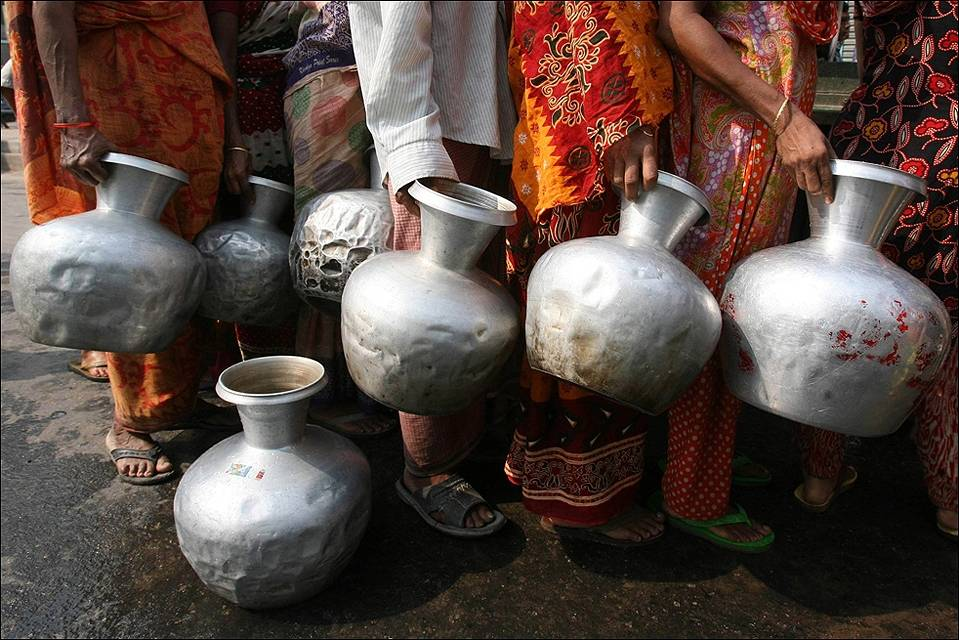
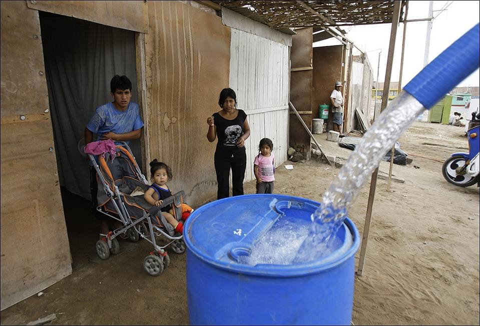
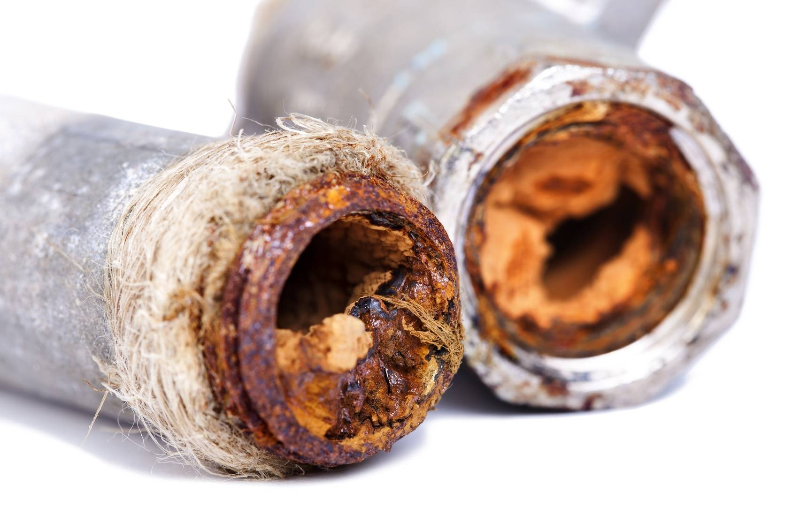

Жизнь без чистой воды
Жизнь без чистой воды
Какую воду пьют люди в разных странах?
Жить без чистой воды? Это реальность для жителей стран Третьего мира. И даже для нас с вами.Каждый год Организация объединенных наций проводит Всемирный День воды, чтобы привлечь внимание к проблемам водных ресурсов в разных странах. В 2016 году отчет о ситуации с водой на планете будет объявлен 24 марта в Париже и 29 марта в Нью-Йорке. А пока мы выбрали факты и цифры о питьевой воде в России и мире.
663 миллиона людей на планете не имеют доступа к питьевой воде. От 2 до 6 часов в день женщины в развивающихся странах тратят на то, чтобы собрать питьевую воду для своей семьи. Это время, которое им никто не оплатит, которое они не потратят на работу, учёбу в школе или на то, чтобы быть рядом со своими близкими.

Женщины в очереди за водой. Бангладеш, район Дакки
1000 детей в день умирает от кишечных болезней, связанных с отсутствием безопасной воды и санитарных условий. 1,8 миллиона людей пьют воду, которая заражена бактериями, смешана с канализационными сточными водами. Ещё больше людей пьют воду, которая не защищена от других санитарных опасностей: например, от отходов промышленных предприятий, которые сбрасываются в реки и озера.

Семья в бедном районе покупает воду. Перу, Лима.
От грязной воды погибает больше людей, чем от войн, терактов и других форм насилия вместе взятых.

В поселке Цюйцзин из-за засухи остался только такой источник воды. Юго-западный Китай
Острее всего проблемы с водой стоят в странах Африки, в Индии, Китае, Венесуэле, Перу. Но даже в России питьевая вода для многих людей остается опасной.
“На выходе” с очистных станций вода соответствует всем правилам и нормам, но снова загрязняется, когда проходит по трубам коммунальных сетей. Подобное происходит во многих регионах. Например, в Калужской области 16,5% водопроводных сетей не соответствуют санитарным правилам и нормам. 39% жителей получают из-под крана воду, которая может причинить вред здоровью.

Труба холодного водоснабжения
Весной во время паводков качество воды значительно ухудшается. Роспотребнадзор установил, что в Санкт-Петербурге и Ленобласти резко упало качество водопроводной воды. На 2015 год 18,9% питьевой воды, подаваемой населению, не удовлетворяет нормам по санитарно-химическим показателям. Каждый год в Ладожское озеро – один из главных источников питьевой воды на северо-западе, наряду с Невой – сбрасывается 1400 млн. кубометров сточных вод от предприятий.
Риск утечки промышленных отходов есть всегда и значительно возрастает весной. Так заражённая вода попала в приток Невы: из-за паводка прорвало заграждающую дамбу на полигоне химических отходов Красный бор в Ленинградской области.
Пьёте чистую воду? – Цените эту возможность! Мы получаем питьевую воду каждый день, просто открыв кран.
Источники:
Данные ООН и Всемирного дня воды, а также ЮНИСЕФ (совместная программа мониторинга водоснабжения и санитарии).
www.unwater.org
www.ipkins.ru
www.instagram.com
www.instagram.com
www.fontanka.ru
ru.depositphotos.com